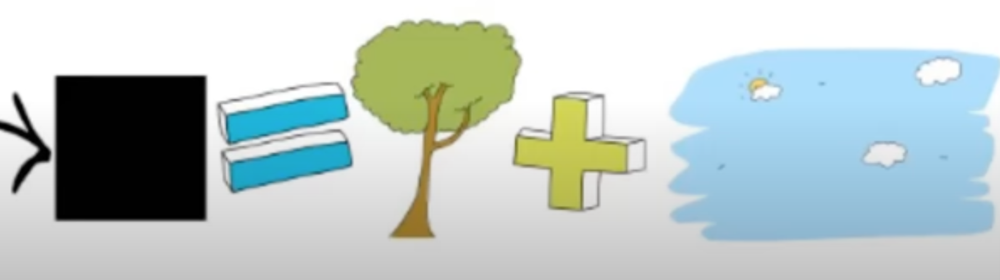
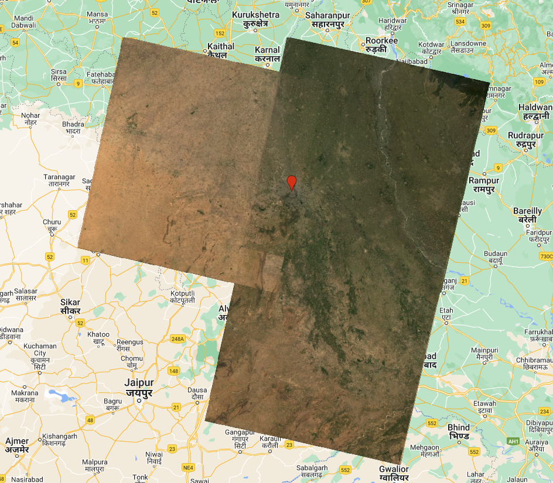
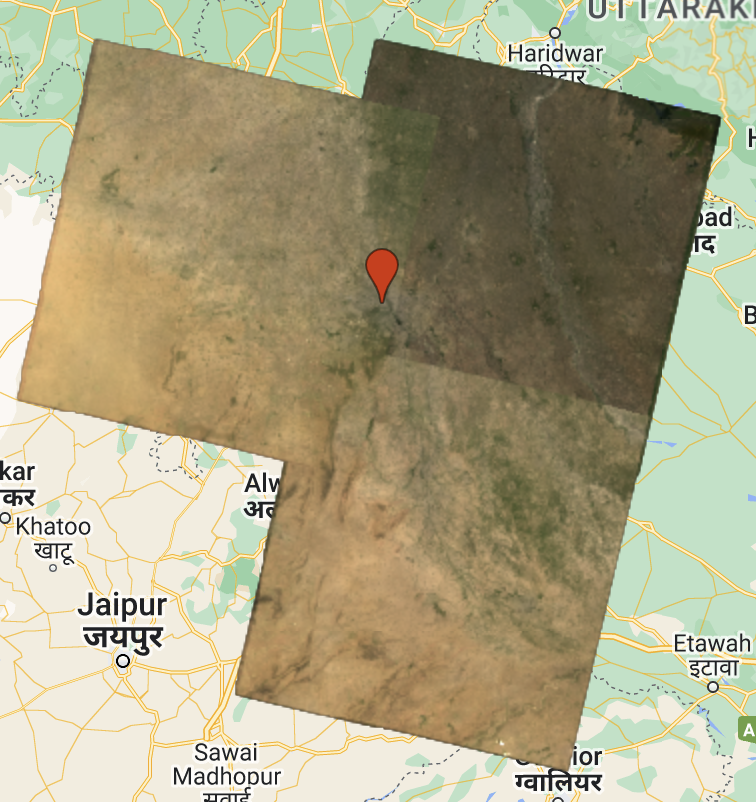
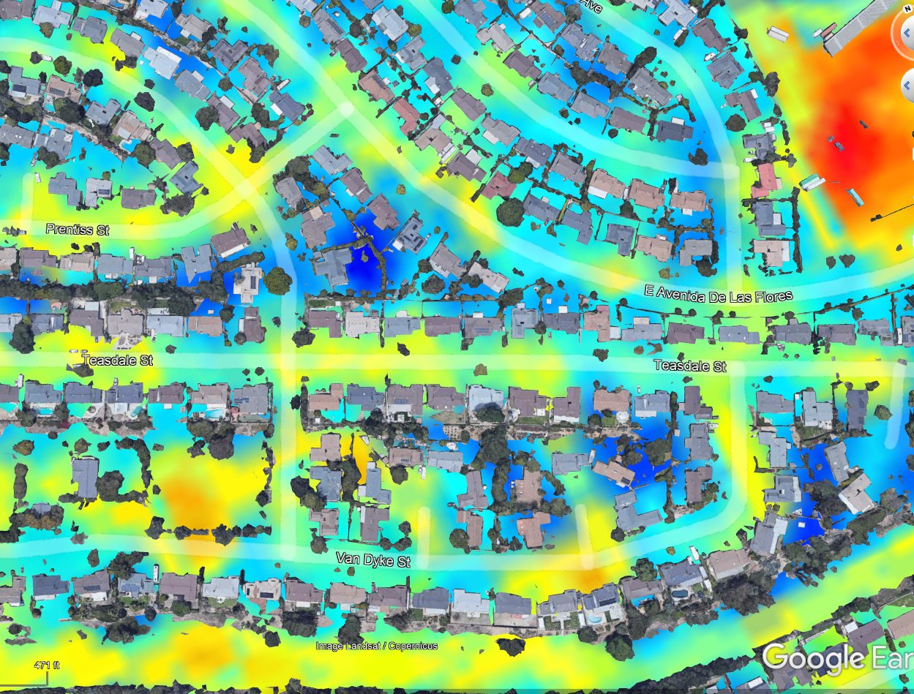
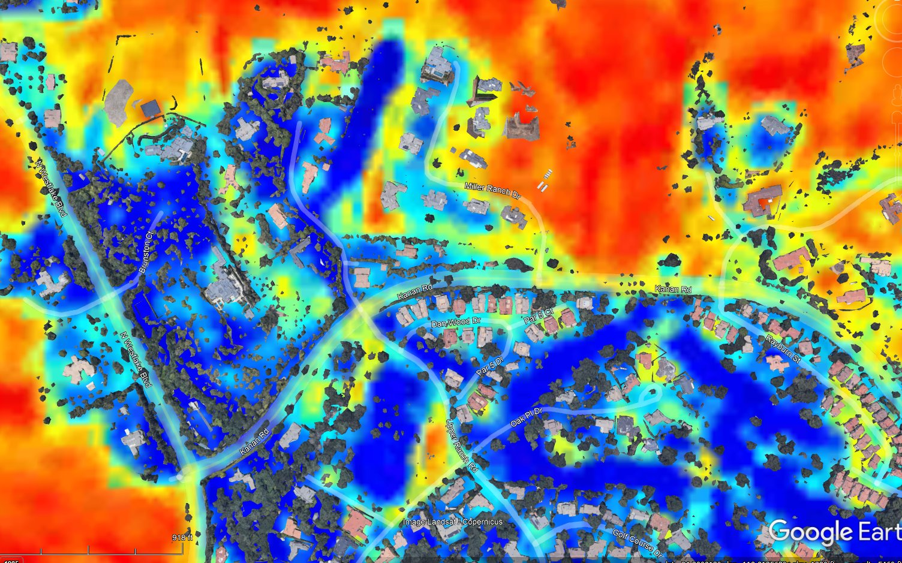

3 Week 3: Corrections
3.1 Summary
In the land before time (aka 5-6 years ago?) satellite imagery needed to be pre-processed in a couple of ways before analysis to (1) correct for numerous factors that affected the accuracy and reliability of the images and (2) merge multiple images when one doesn’t cover our entire study area. I will summarise some of these issues and how to correct them. At the end, I will talk about types of image enhancements that we can perform one we have our corrected imagery.
3.1.1 Image correction
3.1.1.1 The factors that can interfere with image reliability include:
- atmospheric effects - distortions caused by the way light interacts with the atmosphere (mostly in the visible and near infrared bands). Haze (absorption + scattering) reduces contrast.
- sensor errors - geometric distortions (like the view angle of the sensor), radiometric calibration errors, sensor noise
- terrain effects - variation in topography (like changes in elevation and slope) can cause differences in illumination and shadows that distort the image.
- rotation of the earth - causing features on the ground to appear like they are moving
3.1.1.2 There are few different types of corrections we can apply to account for the various effects:
- Geometric correction - comparing the image to a reference data set such as a map or another image and choosing ground control points (GCPs), which are easily identifiable features like road intersections or buildings, on both items. We can then plug these coordinates into a model to find the best transformation function.
- Atmospheric correction - relative or absolute
- Dark Object Subtraction (relative)
- take a dark feature which you would expect to have a value of 0. any value it does have is then assumed to be the atmosphere. use that value as what we should subtract from all other pixels.
- 
- Source: Radiative transfer and atmospheric correction
- Dark Object Subtraction (relative)
- Topographic (orthorectification) correction - making the pixels viewed from directly overhead rather than at an angle.
- Radiometric correction involves converting raw digital numbers (DN) to radiance or reflectance to correct for atmospheric or sensor-related effects.
- Some terms…
- DN - Intensity of the electromagnetic radiation per pixel. The raw value that the sensor collects.
- Radiance - how much light the sensor sees. Includes effects of light source, atmosphere, and surface material
- Reflectance - the ratio of light leaving the target to amount striking the target. (property of the material). Usually BOA, aka surface reflectance.
- Irradiance - the amount of energy from the sun or another source that reaches the top of the Earth’s atmosphere.
- Some terms…
3.1.2 Joining data sets
The second topic we discussed was joining data sets.
When we need to combine multiple images in order to cover our entire study area, we can use a technique called “Mosaicking”, which involves feathering the images. Two adjacent images will overlap slightly, and here, one easy solution is to take the mean of the overlapping pixels (but there are more sophisticated methods too)
These images are from practical 5:
 3 overlapping images not mosaicked yet  Mosaicked – mean taken of the overlapping pixels
3.1.3 Image Enhancements
Once we have our corrected imagery, we can apply enhancements highlight different types of information that might be useful to our study. Many of these techniques help improve the accuracy of land cover classification. Here are some types of enhancements:
- Contrast enhancement - stretching the color range to improve the visual quality of the image.
- Ratioing - dividing the values of two spectral bands to create a new image where the pixel values represent the ratio of the two bands. This helps highlight certain features in the image that may not be as visible in the individual bands.
- Filtering - Low-pass filters are used to blur the image and remove high-frequency noise, while high-pass filters sharpen the image and enhance edges. Median filters are used to remove noise spikes or salt and pepper noise, while mean filters average the pixel values in a given neighborhood to reduce noise.
- PCA - Capturing most of the differences within less bands
- Measuring Texture - looking at the spatial arrangement and variation of grey pixel values in an image. Provides information about the spatial variation of surface properties, such as roughness, coarseness, and regularity.
- Image fusion - fusing together images/bands from multiple sensors
3.2 Applications
I started looking up different use cases of the various image enhancement techniques and found the ratioing to be the most interesting. Some uses:
- Detecting vegetation health
- Soil moisture mapping
- Mineral mapping
- Urban heat island analysis
- Water quality monitoring
- Flood mapping
- Costal zone mapping
I thought the example used in the policy lecture about seeing who is still watering their lawn during a drought was a really amusing use case, especially because I am from California and have driven through neighborhoods where there is a clear and visible difference between who is abiding by the lawn watering ban from one house to the next. I’ve also been frustrated when driving past huge and mostly empty golf courses that remain bright green year round.
This is an example application of detecting soil moisture health, comparing dead dry lawns to healthy moist ones. The Normaliszed Difference Moister Index (NDMI) is calculated using this equation :
\[ NDMI=(B08−B11)/(B08+B11) \] And it uses bands B08 (near infrared) and B11 (short wave infrared) from Sentinel-2 (note that it would take different bands when using data from different sensors). B08 is good for highlighting dense vegetation that appears as dark green. B11 is useful for vegetation moisture content (which means it’s also useful for mapping forest fires!).
In the image below, the moist soil is indicated in blue while the dry is in red:  source: (ai6yrham?)
I was surprised by another image in this thread which shows some of the bigger golf courses cutting back on their watering.  source: (ai6yrham?)
3.3 Reflection
Although we most likely will not have to correct our own imagery in most cases, since most data comes corrected already it’s important to have a general understanding of how these values are generated for a couple of reasons.
good to have background knowledge in case something is behaving differently / you’re getting different results than how you would expect
at some point we might receive data that isn’t already corrected. although i can guarantee you I will not be able to remember exactly how to correct what type of data in what way just from this one lecture, at least I know what to look up.
Whenever technology advances this much so that processes that used to take days now can be done in a few lines of code, I wonder how much people in a field could have achieved if they could have used more of their time on the post processing steps. But I guess that’s always how it goes — we do things the hard, manual way until someone figures out how to automate it, then we continue on to the next hard thing.
I appreciate that imagery comes corrected now because it lowers the barrier for entry. Although i find remote sensing data and its applications fascinating, I think i would be really deterred from continuing to study it if I had to do that much preprocessing beforehand. Because, not gonna lie, this was the most overwhelming lecture of all.